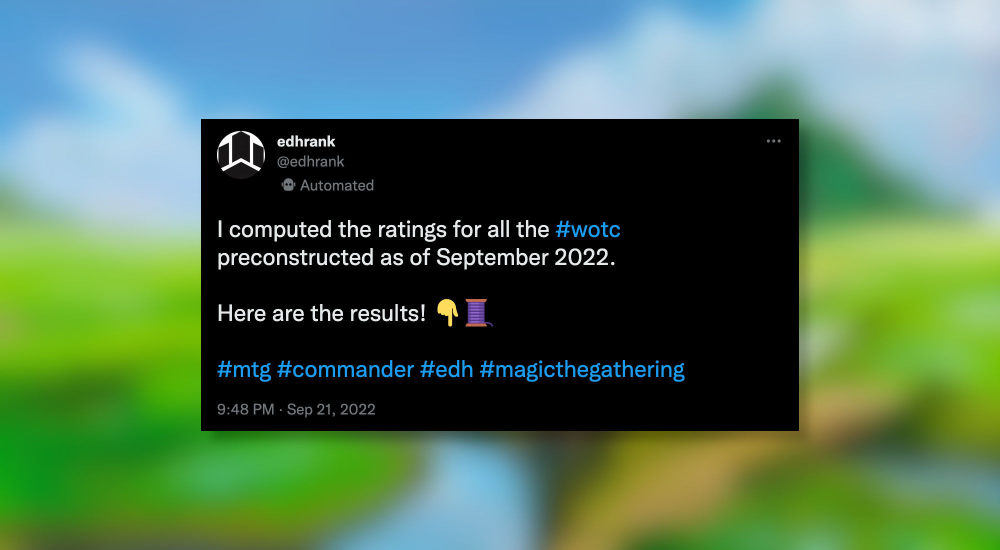

Preco EDH decks (Sept. 2022)
Power Level of all official EDH preconstructed decks since September 2022 evaluated
I used my @edhrank Twitter bot to evaluate all official EDH preconstructed decks released by WotC until 2022.
⚠️ This campaign was done with the version edhrank_0.0.1-alpha.6.
Following Twitter threads can get messy when there are a lot of tweets, so here are the results for each year, sorted alphabetically.
-
All 2022 decks (here) — Anhelo, the Painter, Captain N'ghathrod, Chishiro, the Shattered Blade, Dihada, Binder of Wills, Faldorn, Dread Wolf Herald, Firkraag, Cunning Instigator, Henzie "Toolbox" Torre, Jared Carthalion, Kamiz, Obscura Oculus, Kitt Kanto, Mayhem Diva, Kotori, Pilot Prodigy, Nalia de'Arnise, Perrie, the Pulverizer
-
All 2021 decks (here) — Adrix and Nev, Twincasters, Breena, the Demagogue, Galea, Kindler of Hope, Lathril, Blade of the Elves, Leinore, Autumn Sovereign, Millicent, Restless Revenant, Osgir, the Reconstructor, Prosper, Tome-Bound, Ranar the Ever-Watchful, Sefris of the Hidden Ways, Strefan, Maurer Progenitor, Vrondiss, Rage of Ancients, Wilhelt, the Rotcleaver, Willowdusk, Essence Seer, Zaffai, Thunder Conductor
-
All 2020 decks (here) — Aesi, Tyrant of Gyre Strait, Anowon, the Ruin Thief, Gavi, Nest Warden, Jirina Kudro, Kalamax, the Stormsire, Kathril, Aspect Warper, Obuun, Mul Daya Ancestor, Otrimi, the Ever-Playful, Wyleth, Soul of Steel
-
All 2019 decks (here) — Anje Falkenrath, Ghired, Conclave Exile, Kadena, Slinking Sorcerer, Sevinne, the Chronoclasm
-
All 2018 decks (here) — Aminatou, the Fateshifter, Atraxa, Praetors' Voice, Daretti, Scrap Savant, Estrid, the Masked, Kalemne, Disciple of Iroas, Lord Windgrace, Saheeli, the Gifted, The Mimeoplasm
-
All 2017 decks (here) — Arahbo, Roar of the World, Derevi, Empyrial Tactician, Edgar Markov, Freyalise, Llanowar's Fury, Inalla, Archmage Ritualist, Kaalia of the Vast, Meren of Clan Nel Toth, The Ur-Dragon
-
All 2016 decks (here) — Atraxa, Praetors' Voice, Breya, Etherium Shaper, Kynaios and Tiro of Meletis, Saskia the Unyielding, Yidris, Maelstrom Wielder
-
All 2015 decks (here) — Daxos the Returned, Ezuri, Claw of Progress, Kalemne, Disciple of Iroas, Meren of Clan Nel Toth, Mizzix of the Izmagnus
-
All 2014 decks (here) — Daretti, Scrap Savant, Freyalise, Llanowar's Fury, Nahiri, the Lithomancer, Ob Nixilis of the Black Oath, Teferi, Temporal Archmage
-
All 2013 decks (here) — Derevi, Empyrial Tactician, Jeleva, Nephalia's Scourge, Marath, Will of the Wild, Oloro, Ageless Ascetic, Prossh, Skyraider of Kher
-
All 2011 decks (here) — Ghave, Guru of Spores, Kaalia of the Vast, Riku of Two Reflections, The Mimeoplasm, Zedruu the Greathearted
-
All 2009 decks (here) — Rubinia Soulsinger, Xira Arien
Closing Words
This was an interesting project to work on because preconstructed decks are often considered as the baseline power level for Commander decks.
Usually, preconstructed decks are compensating their lack of power with a higher degree of synergy.
This is a criteria which I'm still struggling to assess in the current version of the bot (edhrank_0.0.1-alpha.7 as of writing).
ℹ️ @edhrank is publicly available and free to use. If you want to learn how to use it, follow this guide.
Support me ❤️
If you want to support me or be kept up to date: